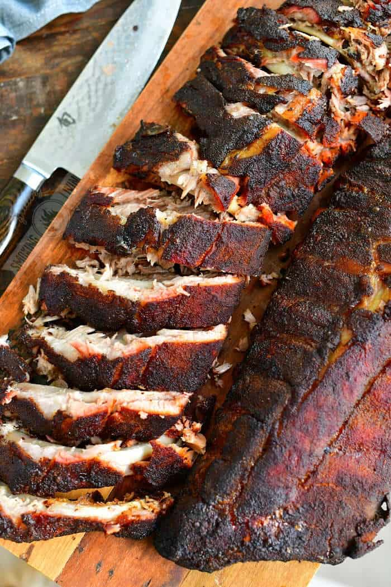

Smoked Ribs

What is this dish?
One of the most iconic foods to ever grace the backyard woodsmoker, ribs are a staple in my house. This recipie is one I've spent years tweaking the balance of the spices. It delivers delicious, tender ribs right to your table at only the cost of nearly an entire day.
Ingredients
Serves 4-5 people, depending on the quantity of sides. Or one hungry individual. Warning: Will make coworkers very jealous
Meat
Dry Rub
-
3 Tbsp dark brown sugar
-
1 Tbsp kosher salt
-
1 Tbsp fresh ground black pepper
-
1 Tbsp Chili powder
-
2 tsp paprika (smoked is acceptable, just redundant)
-
1 tsp garlic powder
-
1 tsp onion powder
-
1 tsp oregano
-
1/4 tsp cumin
-
1/4 tsp cayenne pepper (omit if you want it less spicy)
-
1/4 tsp chipotle powder
-
1/4 tsp ground white pepper
Steps
-
Prepare the ribs by patting them dry, and removing the silver skin. (While not considered necessary by some, I believe the silverskin has an unpleasant texture when eaten.)
-
Mix all the rub ingredients in a small bowl. Use a fork to mix thoroughly, breaking up the brown sugar until entirely incorporated.
-
Apply an even coating of the rub to the entire exterior of the ribs. Top, bottom, and don't forget the sides! You want to eventually use all of the rub you just made. I try to put most of it on the top, where most of the meat resides.
-
Cover, and allow to rest in your fridge overnight.
-
The next day, remove the ribs from the fridge, and allow to rest on your counter for a while to come up in temperature.
-
Pre-heat your smoker to 215 degrees Farenheit. (101 Celcius).
-
Place the ribs directly on the smoker rack, and smoke uncovered for 2-4 hours. This will depend on your smoker, and how smokey you want the ribs. I use a Traeger pellet smoker on "Super Smoke Mode", and let them go for about 3 hours. On a charcoal and wood chunk smoker you might want to do just two hours.
-
Temporarily remove from the smoker and wrap the ribs in heavy-duty foil, leaving it open at the top to still allow some light smoke-flow. Return to smoked for the remainder of the 10-12 hour cook time.
-
Remove from smoker, and rest for 30 minutes. Remove from foil, slice into individual pieces, and serve with your favorite sides!